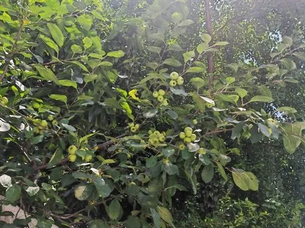

灌木与花木 · 植物界
海棠花 Malus spectabilis

蔷薇科苹果属落叶小乔木，春季花蕾红艳、开放后粉白如霞，是中国传统名花，素有“花中神仙”之称。
- 分类
- 门被子植物门纲木兰纲目蔷薇目科蔷薇科属苹果属
- 栖息环境
- 海拔 1200 米以下的向阳山坡、庭院与园林，喜光耐寒耐旱
- 地理分布
- 原产中国河北、山东、陕西、江苏、浙江等地；南北各地庭院广泛栽培
- 保护级别
- 暂无评估；中国未列入国家重点保护野生植物名录
物种志
海棠花为蔷薇科苹果属落叶小乔木，高 5–8 米，树皮灰褐色、光滑，小枝粗壮。叶片互生，椭圆形至长圆形，边缘具细锯齿，幼叶被柔毛。花 4–6 朵簇生，花蕾深红，开放后花瓣粉红至白色，倒卵形，花径 3–5 厘米，花期 4–5 月；果实近球形，黄色至红色，果期 8–9 月。
海棠花原产中国，河北、山东、陕西、江苏、浙江等地有分布，栽培历史逾千年，与西府海棠、垂丝海棠、贴梗海棠并称“海棠四品”。它喜光、耐寒、耐旱，适宜深厚肥沃、排水良好的土壤。海棠花姿潇洒、花开似锦，古人常植于庭院，苏轼有“只恐夜深花睡去，故烧高烛照红妆”之句；果实可食但酸涩，多用于加工。海棠也是苹果嫁接的优良砧木。
形态与习性
- 株高5–8 m，树皮光滑、小枝粗壮
- 花期4–5 月，花蕾深红、开放后粉白
- 果期8–9 月，果实近球形
- 光照喜光，光照足则花繁色艳
- 水分耐旱，忌积水
- 土壤深厚肥沃、排水良好的壤土
- 主要用途庭院观花、苹果嫁接砧木、果可加工
趣味知识
- 海棠花与西府海棠、垂丝海棠、贴梗海棠并称“海棠四品”。
- 苏轼“只恐夜深花睡去，故烧高烛照红妆”写的正是海棠。
- 海棠花的花蕾深红，开放后逐渐转为粉白，一树之上深浅相间。
- 海棠是苹果属植物，常被用作苹果嫁接的砧木。